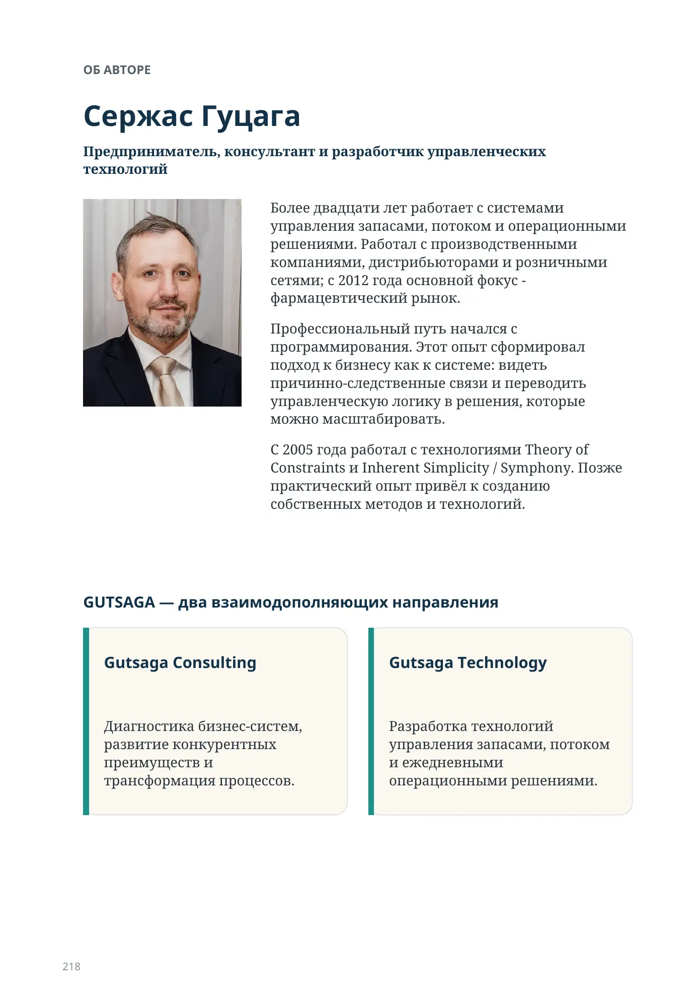
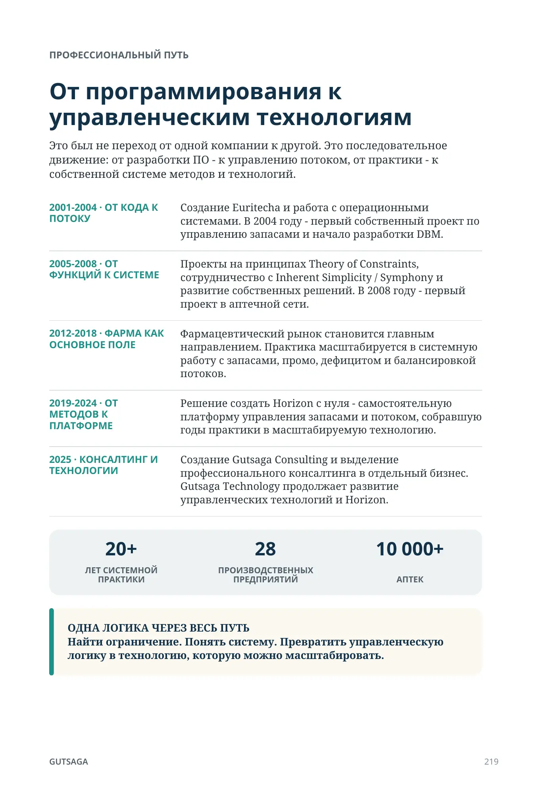

Об авторе
Сержас Гуцага
Предприниматель, консультант и разработчик управленческих технологий

Более двадцати лет работает с системами управления запасами, потоком и операционными решениями. Работал с производственными компаниями, дистрибьюторами и розничными сетями; с 2012 года основной фокус - фармацевтический рынок.
Профессиональный путь начался с программирования. Этот опыт сформировал подход к бизнесу как к системе: видеть причинно-следственные связи и переводить управленческую логику в решения, которые можно масштабировать.
С 2005 года работал с технологиями Theory of Constraints и Inherent Simplicity / Symphony. Позже практический опыт привёл к созданию собственных методов и технологий.
GUTSAGA — два взаимодополняющих направления
Gutsaga Consulting
Диагностика бизнес-систем, развитие конкурентных преимуществ и трансформация процессов.
Gutsaga Technology
Разработка технологий управления запасами, потоком и ежедневными операционными решениями.
Профессиональный путь
От программирования к управленческим технологиям
Это был не переход от одной компании к другой. Это последовательное движение: от разработки ПО - к управлению потоком, от практики - к собственной системе методов и технологий.
- 2001–2004 · ОТ КОДА К ПОТОКУ
- Создание Euritecha и работа с операционными системами. В 2004 году - первый собственный проект по управлению запасами и начало разработки DBM.
- 2005–2018 · ОТ ФУНКЦИЙ К СИСТЕМЕ
- Проекты на принципах Theory of Constraints, сотрудничество с Inherent Simplicity / Symphony и развитие собственных решений. В 2008 году - первый проект в аптечной сети.
- 2012–2018 · ФАРМА КАК ОСНОВНОЕ ПОЛЕ
- Фармацевтический рынок становится главным направлением. Практика масштабируется в системную работу с запасами, промо, дефицитом и балансировкой потоков.
- 2019–2024 · ОТ МЕТОДОВ К ПЛАТФОРМЕ
- Решение создать Horizon с нуля - самостоятельную платформу управления запасами и потоком, собравшую годы практики в масштабируемую технологию.
- 2025 · КОНСАЛТИНГ И ТЕХНОЛОГИИ
- Создание Gutsaga Consulting и выделение профессионального консалтинга в отдельный бизнес. Gutsaga Technology продолжает развитие управленческих технологий и Horizon.
20+ЛЕТ СИСТЕМНОЙ ПРАКТИКИ
28ПРОИЗВОДСТВЕННЫХ ПРЕДПРИЯТИЙ
10 000+АПТЕК
GUTSAGA